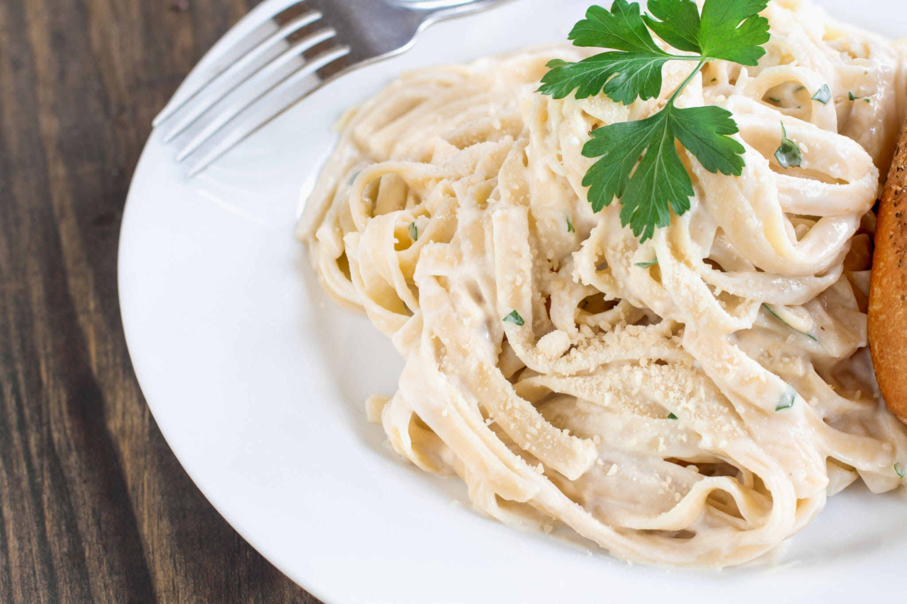

Fetuccine Alfredo

Back to Recipes
Description
Fettuccine is a type of pasta popular in Roman cuisine. It is descended from the extremely thin capelli d'angelo of the Renaissance, but is a flat, thick pasta traditionally made of egg and flour
Ingredients
- butter
- heavy cream
- Parmesan cheese
- garlic
- fresh parsley
Steps
- Cook the pasta.
- Melt the butter and cream together on the stove, season, and stir in the cheese.
- Toss the pasta in the cheese sauce.